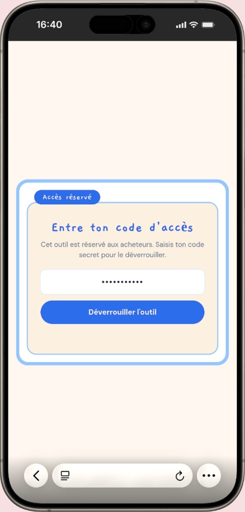

Ton client saisit ses chiffres sur mobile et obtient sa réponse en direct.
Exemple livré : Calculateur de Prix & Rentabilité avec verrou par mot de passe.
MÉCANIQUE CLIENT
Coûts + temps + marge → Tarif conseillé calculé en direct.
